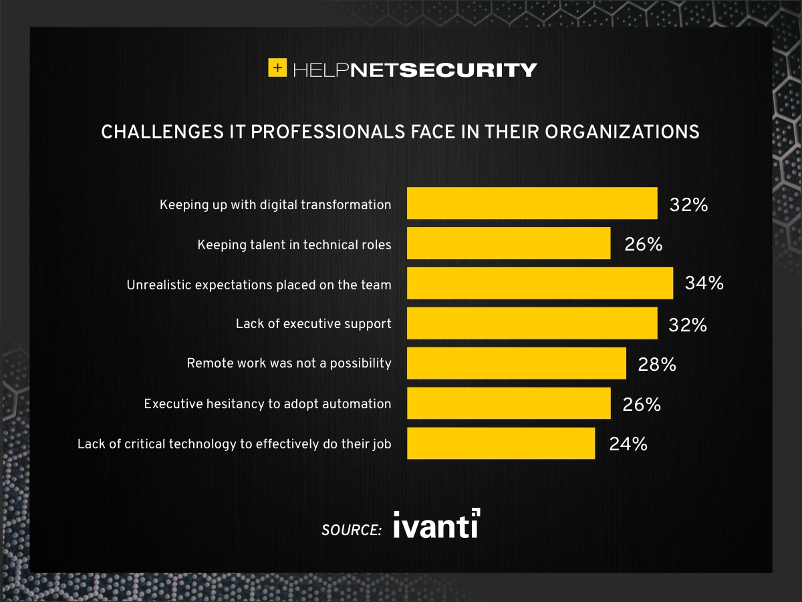

AFRICAN IT PROFESSIONALS
Date: 02/07/2025 | Author: Matsekoleng Ashley
IT professions in Africa covers a wide range of job description:
from HTML/CSS coder to Front-End development and responsibilities.
It is what they do and know, but even as professionals
they do face challenges from time to time
Challenges Faced By African IT Professionals
|
Some of those issues or rather challenges, include:
|
 |
Skill gap
The difference between the skills that IT professionals
have and those of people who are seeking for a job that
they need to acquire in order to be in line the required is called a Skill gap.
A lot of people around Africa are unemployed and seeking jobs, but not many
have the skills requaired to fill in the gaps in IT departments.
Cloud computing
Cloud computing refers to saving and accessing of data on the internet e.g firebase instead of
saving it on your hardware.
It save a lot memory and a lot more safer than
your computer where it can e misplaced or erased by mistake.
Cybersecurity
Cybersecurity is providing security for your data and network, protecting it from attackers or pirates. We use firewalls to protect our data.
Digital transformation
Companies use Digital transformation to enhance and improve their businesses.
It has
made work loads lighter and tasks are completed quicker. It is more eficient than the
traditional ways of doing it.
| More or less, these challenges are faced by well trained professional IT specialists around Africa. |